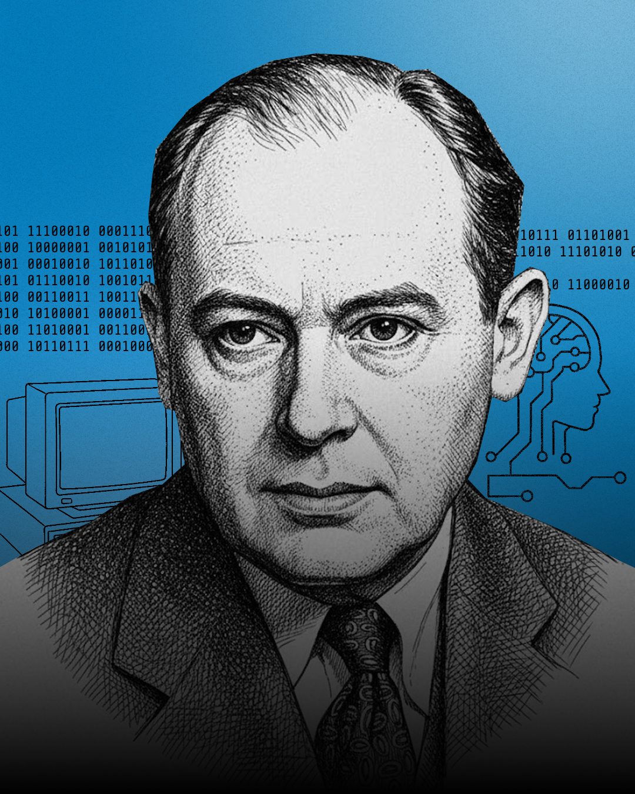

Describe the purpose of the Central Processing Unit.
1.1.1 Architecture of the CPU
Learning objectives
Identify the ALU, Control Unit, cache and registers.
Explain what the PC, MAR, MDR, CIR and ACC store.
Model the fetch-decode-execute cycle.
Explain how Von Neumann architecture uses one shared memory.
Part 1 - The purpose of the CPU
Focus
First, we will look at why a computer needs a CPU and how instructions make things happen.
Part 1 - Purpose of the CPU
How does the computer know what to do next?
You open a 2D platform game. The screen changes, sounds play, buttons respond and the score updates. You reach the final level and the final boss appears on screen.
The boss suddenly moves towards your character, launches an attack and reacts when you press the buttons.
Question
How does the computer know what the final boss should do, when it should attack, and how it should respond to the player?

Key idea
The CPU must know what instructions to run next, what data to use and when to react.
What you should notice
Every change on screen happens because the CPU follows instructions one after another.
Part 1 - Purpose of the CPU
The CPU is the computer's main processor
The Central Processing Unit is the main processor inside a computer. It processes instructions and controls the main operations of the computer.
Like a brain, the CPU receives information, works out what to do, and sends signals so actions happen.

Part 1 - Purpose of the CPU
CPU instructions create output
RAM
CPU
Output device
The CPU repeats the cycle of getting one instruction from RAM, processing it, and sending the resulting signal to an output device.
Part 1 - Purpose of the CPU
The CPU processes instructions and data
RAM
| Address | Instructions or data |
|---|---|
| 1040 | Instructions: Spotify play button instructions |
| 1041 | Data: Spotify current song data |
| 1042 | Instructions: Chrome tab instructions |
| 1043 | Data: Chrome webpage image data |
| 1044 | Data: Game score data |
A program is made from instructions and data. The instructions and data are stored in RAM, then the CPU fetches them from RAM and executes the instructions.
Part 1 - Check your understanding
Multiple choice question
Q1
1 mark
What is the main purpose of the CPU?
- A. To permanently store files and programs.
- B. To process instructions and control many computer operations.
- C. To display images on the monitor.
- D. To connect the computer to the Internet.
Correct answer
B. The CPU processes instructions and controls many computer operations.
Part 2 - CPU components and the FDE cycle
Focus
Next, we will look inside the CPU and follow the fetch-decode-execute cycle.
Part 2 - CPU components and the FDE cycle
Core CPU components
The Control Unit
The Control Unit coordinates CPU operations. It decodes instructions and sends control signals to make the right parts act at the right time.
Arithmetic Logic Unit
The ALU performs arithmetic, logic operations and comparisons needed to execute instructions.
Core components are the main internal parts of the CPU. The Control Unit coordinates what happens next, while the ALU performs calculations, logic and comparisons.
Part 2 - CPU components and the FDE cycle
Special purpose registers
A CPU register is a very small, very fast storage location inside the CPU. Registers hold the immediate addresses, instructions, data or results the CPU needs while it is processing.
Part 2 - CPU components and the FDE cycle
The FDE cycle
Fetch
The CPU gets the next instruction from memory.
Decode
The Control Unit works out what the instruction means.
Execute
The CPU carries out the instruction using the right components.
Repeat
The CPU moves on to the next instruction and continues the cycle.
Remember
The FDE cycle happens repeatedly while the computer is running.
Part 3 - The stored program concept and Von Neumann architecture
Stored program concept
John von Neumann helped explain the stored program concept in 1945. This means program instructions are stored in memory along with the data.
Before this, many computers had to be physically rewired or reset to do a different job. This idea was an improvement because a computer could run a new program by loading new instructions into memory.

Part 3 - The stored program concept and Von Neumann architecture
Von Neumann architecture
Before
Instruction memory
Data memory
CPU
Now
Main memory
instructions
data
CPU
Von Neumann architecture uses one main memory for both instructions and data. The CPU fetches what it needs from that memory, so the same computer can run lots of different programs without changing the hardware.
Summary
What to remember
CPU
The main processor that processes instructions and controls operations.
Registers
Very small, fast storage locations inside the CPU.
FDE cycle
The CPU fetches, decodes and executes instructions repeatedly.
Von Neumann
Instructions and data are stored in one shared main memory.
Final takeaway
The CPU runs programs by repeatedly fetching instructions and data from memory, decoding what to do, and executing the instruction using its internal components.